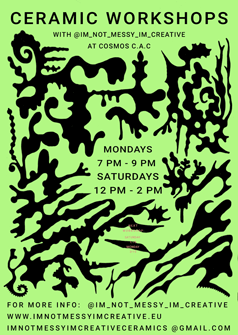

with
Im Not Messy Im Creative

These Ceramic Workshops are taking place on Mondays 7-9 PM and Saturdays 12-2 PM.
Classes will be held every week, and new dates are announced in the end of each month.
It consists of four classes where all steps of the ceramic process will be tought.
This is a handbuilding class focusing on the sculptural elements in a fun, relaxed and creative enviroment.
WHERE:
Studio of Im_Not_Messy_Im_Creative in Cosmos.Cac/Campolide Atléthico Clube.
PRICE:
4 Classes 140 € (Including all materials & 2 kilns)
DECEMBER CLASSES:
Monday (5,12,19,26 December) 7 PM - 9 PM
Saturday (3,10,17,31 December) 12 PM - 2 PM
INCLUDES:
Materials (Clay, Paint,Tools), 2 x Kilns, small and intimate class with guidance of teacher.
LEARN:
- Develop your own creative ideas.
- Make weird sculptures, bowls, vases,cups or whatever your heart desires with various methods of handbuilding.
- Make and mix engobes & paint obscure patterns.
- A short introduction to kiln preparation & glazing.
- Among other things you would not learn elsewhere!
This way you will be able to follow up on your pieces, and learn all the steps of the process.
Maximum capacity per class is 5 people which makes these classes a unique and intimate experience.
IMPORTANT THINGS TO CONSIDER BEFORE BOOKING A CLASS:
-You can attend saturdays and mondays together, please inform which days you can attend in your booking form.
- Once you made a reservation, you will receive an email with payment information.
Your spot will only be confirmed once you have transfered or payed the course fee according to the confirmation mail.
- If You can not attend the class booked please inform as soon as you can so we can re-arrange the dates.
Cancelation due to illness will also be compensated with re-aranging class dates.
-If you are visiting Lisbon and want to take a class please let me know and we figure out a solution.
- If a class is cancelled the same day, you will receive a 50 % refund of the fee.